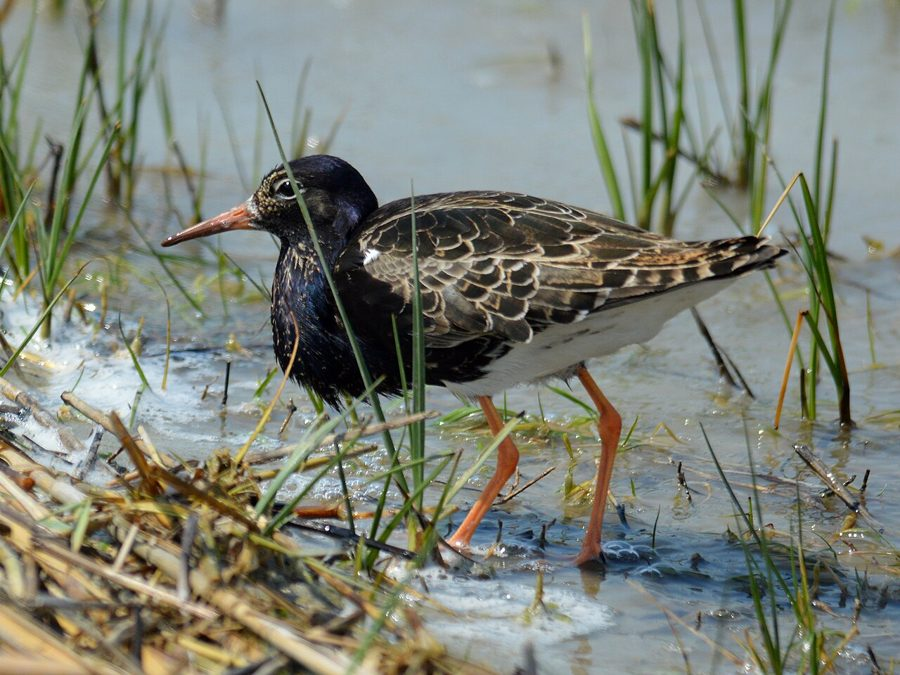

रफ़Ruff
Calidris pugnax · Scolopacidae · BRD-0132

- Scientific nameवैज्ञानिक नाम
- Calidris pugnax (Linnaeus, 1758)
- Familyकुल
- Scolopacidae
- Hindiहिंदी
- रफ़
- Local namesस्थानीय नाम
- ruff, ruf, ruff sandpiper, ruff bird
- Status hereयहाँ की स्थिति
- native
- Movementआवागमन
- Winter visitor
- IUCNIUCN
- LC
- Reviewसमीक्षा
- audited and independently read
When to look कब देखें
Winter visitorशीतकालीन प्रवासी. Expected mainly in September, October, November, December, January, February, March, April, May.मुख्यतः सितंबर, अक्टूबर, नवंबर, दिसंबर, जनवरी, फ़रवरी, मार्च, अप्रैल, मई में अपेक्षित।
Arrives in September–October from Arctic breeding grounds; departs by April–May. Expected on shallow wetlands, flood plains and river margins across eastern UP, particularly in Basti district. All migrants and visitors →
Tell it apart from इनसे अलग पहचानें
रफ़ / Ruff
Calidris pugnax (Linnaeus, 1758) — Scolopacidae
रफ़ — आर्कटिक से शीतकालीन मौसम में पूर्वी उत्तर प्रदेश आने वाली एक अनोखी बाज़ सी चिड़िया। इसका सबसे विशेष लक्षण है कि नर पक्षियों में प्रजनन के दौरान गर्दन के चारों ओर झबरे पंखों की एक भव्य 'रफ' (कॉलर) विकसित होती है, जो इसका नाम देती है। सर्दियों में यह दक्षिण भारत आते हैं और छोटे समूहों में तालाबों के किनारे और नदी के दलदलों में भोजन खोजते हैं।
Quick Identification त्वरित पहचान
| Feature | Description |
|---|---|
| Size | Medium wader; 25–30 cm long; highly variable |
| Build | Slender, upright posture; long neck; small head |
| Plumage (non-breeding) | Buff-brown overall; scaly appearance; pale underparts |
| Legs | Long, yellow to orange-red; set far back |
| Bill | Medium length, slightly drooped, yellow-green with dark tip |
| Behaviour | Solitary or small groups; probe-feeds in mud; wary |
| Flight | Fast, erratic; oval white rump patch distinctive |
Field tip: A medium-sized sandpiper with a long neck held upright. In winter plumage, looks buff and scaly overall. The long yellow-orange legs and white rump patch visible in flight distinguish it from smaller stints. Feeds singly or in small flocks on shallow mudflats and wet margins.
हिंदी — कैसे पहचानें:
मध्यम आकार की सैंडपाइपर; लंबी गर्दन।
भूरे-पीले रंग की चिड़िया; लंबी पीली टाँगें।
अकेले या छोटे समूह में दलदल के किनारे खोज करते हैं।
उड़ते समय सफेद कमर पट्टी दिखती है।
Morphology आकारिकी
Biometrics:
| Measurement | Range |
|---|---|
| Total length | 250–300 mm |
| Wing | 160–180 mm |
| Tail | 60–80 mm |
| Bill | 28–36 mm |
| Tarsus | 30–38 mm |
| Weight | 75–190 g |
Size: 25–30 cm long; wingspan 46–58 cm. Highly variable; females smaller and lighter than males.
Non-breeding plumage: Buff-brown overall with darker centres to feathers giving scaly appearance. Head and neck buff, finely streaked. Underparts white or buff-white. Rump white; tail dark with white sides.
Breeding plumage (seen in Europe, not in India): Males develop elaborate head and neck decorations; females remain duller.
Bill: Medium length, slightly drooped, yellow-green with dark tip. Sensitive for probing in mud.
Legs and feet: Long, set far back on body; yellow to orange-red; used for probing as much as walking.
Rump: Distinctive white oval patch visible in flight — key field mark.
Sexes: Females smaller and shorter-billed than males.
Vocalisations. Call repertoire:
- Contact call: A soft, low tu-whit, repeated.
- Alarm call: A sharper kee-yew when flushed.
- Flight calls: Grunting and whistling in flocks.
हिंदी: नरम टू-विट जैसी आवाज़। डर पर तीक्ष्ण आवाज़ निकालता है।
Behaviour & Ecology व्यवहार और पारिस्थितिकी
Probe-feeder: Ruffs are specialized mud-prober, walking slowly through shallow water and probing vertically with bill for small prey. They feed on:
- Amphipods and small crustaceans
- Aquatic insect larvae and pupae
- Small fish fry
- Worms and molluscs
Social behaviour: Highly gregarious in winter; form small to medium flocks on suitable wetlands. Males and females often separate during the day.
Feeding time: Primarily crepuscular feeders; active at dawn, dusk, and night on moonlit nights.
Roost behaviour: Nocturnal roosting on open mudflats or shallow water; gather in loose groups at roost sites.
Predators: Marsh Harrier, Peregrine Falcon, crows, and jackals may take adults. Chicks vulnerable to many predators in breeding grounds.
Mimicry behaviour: In breeding grounds, males gather at leks and display elaborate ritualized movements; non-breeding birds are quiet and wary.
हिंदी: दलदल में नाक डालकर भोजन खोजते हैं। सर्दी में झुंड में रहते हैं। रात में सोते हैं, दिन में भोजन करते हैं।
Life Cycle / Phenology जीवन चक्र
Winter visitor: Breeds in Arctic Russia and Siberia (April–August); absent during breeding season. Returns to eastern UP from September and remains through May.
Arrival and departure: First birds arrive in late September; numbers peak in January–February; most depart by April, with stragglers through May.
Courtship: Takes place on wintering grounds in late winter. Males display head-turning and posturing.
Moult: Complete moult occurs before and after migration. Non-breeding plumage acquired and worn for wintering.
Hibernation pattern: Does not hibernate; remains active throughout winter, moving locally with water levels and food availability.
हिंदी: सितंबर में आता है, मई तक रहता है। आर्कटिक में प्रजनन करता है। सर्दियों में भारत में रहता है।
Host Plants or Prey आहार
| Food Type | Examples | Feeding Behaviour |
|---|---|---|
| Amphipods | Gammarus spp. | Probe in mud and shallow water |
| Insect larvae | Chironomid, mayfly nymphs | Vertical probing |
| Small crustaceans | Ostracods | Picked from surface or mud |
| Small fish fry | Gobiids | Captured in shallow water |
| Aquatic worms | Oligochaetes, nemerteans | Probed from substrate |
हिंदी: कीड़े, छोटी मछलियाँ, और कीचड़ में रहने वाले छोटे जीव खाता है।
Predators / Natural Enemies शत्रु
- Avian predators: Marsh Harrier, Peregrine Falcon, Black-headed Gull (for chicks)
- Mammalian predators: Wild boar, jackal, mongoose
- Parasites: Helminths and feather mites
हिंदी: शिकारी चिड़ियाँ और जंगली जानवर इसका शिकार करते हैं।
Agricultural / Human Relevance कृषि प्रासंगिकता
Protected species: The Ruff is protected under the Wildlife (Protection) Act 1972 (Schedule IV, amended 2022). Hunting is illegal in India.
Wetland health: As a specialist insectivore and probe-feeder in shallow wetlands, the Ruff is an indicator of healthy, undisturbed mudflats and marshes with stable water levels.
Wetland modification: Artificial embankments and water-level manipulation in tanks and lakes can reduce suitable foraging habitat.
Historical records: Mentioned in Mughal hunting records as a game species; no longer hunted.
Cultural value: Recognized by birdwatchers as a distinctive and charismatic winter visitor.
हिंदी: कानून से पूरी तरह सुरक्षित है। इसका शिकार करना कानूनी रूप से निषिद्ध है।
Expected Locally स्थानीय रूप से अपेक्षित
Not a field record. Written from published accounts for eastern Uttar Pradesh. No confirmed local sighting yet — if you have seen it, that is what the atlas needs.
अभी तक स्थानीय पुष्टि नहीं। यह विवरण प्रकाशित स्रोतों से है, किसी अवलोकन से नहीं।
Winter range: Expected in eastern Uttar Pradesh from September to May on shallow wetlands, mudflats, and flood plains. No published records from the local surveys (Bakhira, Parvati Arga, or Ayodhya wetlands surveys), though the species is expected on range grounds as a winter visitor to suitable habitats.
Habitat preference: Shallow mudflats, embankments of tanks and reservoirs, and the margins of flooded fields where soft substrate allows probing.
Peak occurrence: January–February, when populations from central Asian breeding grounds have moved south.
Nearest published record: The species is mentioned in Handbook of the Birds of India and Pakistan as a winter visitor to the Gangetic plains, including Uttar Pradesh.
What a first record would be: A dated photograph showing the bird clearly on a mudflat or wetland margin in a specific location (with GPS coordinates and date) submitted through the About page of this atlas. The distinctive white rump patch visible in flight helps confirm identification.
हिंदी: यह पक्षी स्थानीय रूप से अपेक्षित है, न कि देखे गए बतौर प्रेक्षण। सितंबर से मई तक दलदल और नदी के किनारे देखे जा सकते हैं। पहला रिकॉर्ड के लिए स्पष्ट फोटोग्राफ चाहिए।
Distribution वितरण
Global range: Arctic breeding range from Scandinavia to central Siberia. Winters across Europe, Africa, and Asia to Australia. Polytypic with several subspecies, but only C. p. pugnax reaches India.
In India: Distributed across the subcontinent as a winter visitor (September–May) on wetlands and marshes. More common in northern and central India.
In Uttar Pradesh: Winter visitor to major river systems (Ganga, Gomti, Ghaghra, Rapti) and associated wetlands.
In Basti district / eastern UP: Expected as a winter visitor to suitable wetlands and flood plains, particularly the Ghaghra and Rapti systems, though not yet documented in the three local surveys.
Research Questions शोध प्रश्न
- What are the precise breeding and wintering grounds of the Ruff populations that winter in eastern UP? Do different populations winter in different parts of the region?
- How does the diet composition of Ruff in eastern UP differ between early winter (September–November) and late winter (February–May)?
- क्या कृत्रिम बाँधों और जलाशयों के निर्माण से इस चिड़िया की सर्दियों की आवास में परिवर्तन हुआ है?
- What is the population trend of Ruff in the Ghaghra-Rapti wetland system over the last decade?
- How do water-level fluctuations in tanks and reservoirs affect the availability of foraging habitat for Ruff? (A child can measure water levels at local tanks and count wader flocks.)
- क्या खेतों में कीटनाशक का उपयोग कम करने से इस चिड़िया का भोजन बढ़ सकता है?
Similar Species मिलती-जुलती प्रजातियाँ
| Species | Key Difference | Hindi | Field Rule | |
|---|---|---|---|---|
| [[common_redshank\ | Common Redshank]] (Tringa totanus) | Redder legs and bill; more upright posture; red on wing coverts visible in flight | चुनार | Redshank is more upright with red legs and reddish-brown wing patch. Ruff has yellow-orange legs and white rump. |
| [[green_sandpiper\ | Green Sandpiper]] (Tringa ochropus) | Smaller; darker plumage; white rump but different overall colouring | हरी सैंडपाइपर | Green Sandpiper is darker overall with contrasting white rump and dark upper wings. |
| [[wood_sandpiper\ | Wood Sandpiper]] (Tringa glareola) | Smaller; barred flanks; yellowish legs; no white rump patch | लकड़ी सैंडपाइपर | Wood Sandpiper is smaller and has yellowish legs; white rump less obvious than Ruff's oval patch. |
| [[temmincks_stint\ | Temminck's Stint]] (Calidris temminckii) | Much smaller; fine bill; yellowish legs; lacks white rump patch | टेमिंक स्टिंट | Stint is much smaller and finer-billed; lacks the distinctive white rump patch. |
Field rule: Ruff is a medium-sized wader with a long neck held upright, long orange-yellow legs, and a distinctive white oval rump patch visible in flight. The combination of size, leg colour, and rump pattern distinguishes it from similar species.
Taxonomy & Classification वर्गीकरण
Original description. The species was described by Carl Linnaeus in 1758 in the Systema Naturae (10th edition), as Tringa pugnax. Type locality is northern Europe. The genus was revised and the species moved to Calidris in the 1990s based on molecular evidence.
Subspecies. Polytypic with several subspecies, but C. p. pugnax (Eurasia) is the only one reaching India.
Family and order placement. Order Charadriiformes; family Scolopacidae (sandpipers, phalaropes, and snipes). The genus Calidris contains many small to medium sandpipers, many of which are highly migratory.
Phylogenetic notes. The Ruff is closely related to other probe-feeding calidrid sandpipers. Molecular studies confirm its position within the genus Calidris.
IUCN status rationale. The species is assessed as Least Concern (LC) globally. Populations are stable and populations are supported by their adaptability to various wetland habitats. In India, the species is protected under the Wildlife Protection Act 1972 (Schedule IV).
हिंदी: यह विश्वभर में पाया जाता है। भारत में सर्दियों में आता है। कानून से सुरक्षित है।
Photo Gallery फोटो गैलरी
No photos yet — add field photos to media/species/ruff/ and run node scripts/sync_photos.js.
Wanted photos:
- Non-breeding plumage on mudflat
- Probing behaviour in shallow water
- In flight showing white rump patch
- With other waders for size comparison
- At roost on open water
References संदर्भ
- Linnaeus, C. (1758). Systema Naturae per Regna Tria Naturae (10th edn). Laurentii Salvii, Holmiae. Vol. 1.
- Ali, S. & Ripley, S. D. (1968). Handbook of the Birds of India and Pakistan. Vol. 2 (Waders to Owls). Oxford University Press, Delhi. Pp. 156–159.
- Grimmett, R., Inskipp, C. & Inskipp, T. (2011). Birds of the Indian Subcontinent (2nd edn). Oxford University Press, Delhi. Pp. 131–132.
- Cramp, S. & Simmons, K. E. L. (1983). Handbook of the Birds of Europe, the Middle East and North Africa: The Birds of the Western Palearctic. Vol. 3 (Waders to Gulls). Oxford University Press. Pp. 606–625.
- GBIF Occurrence Data — Calidris pugnax, India (2024).
- IUCN Red List (2024). Calidris pugnax — BirdLife International assessment. IUCN, Cambridge. Status: Least Concern.
Source file: species/fauna/birds/ruff.md